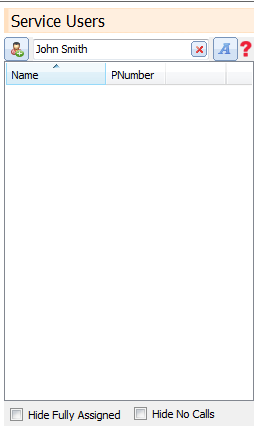

The service user list appears on the main screen to left of the service user calendar.
With this list you can search by name or P number.

Here are the list of icons that may appear next to a service user and what they mean.
 - This service user has medical information
- This service user has medical information
 - This service user has calls that are unassigned.
- This service user has calls that are unassigned.
- This service user has notes that are classed as important.